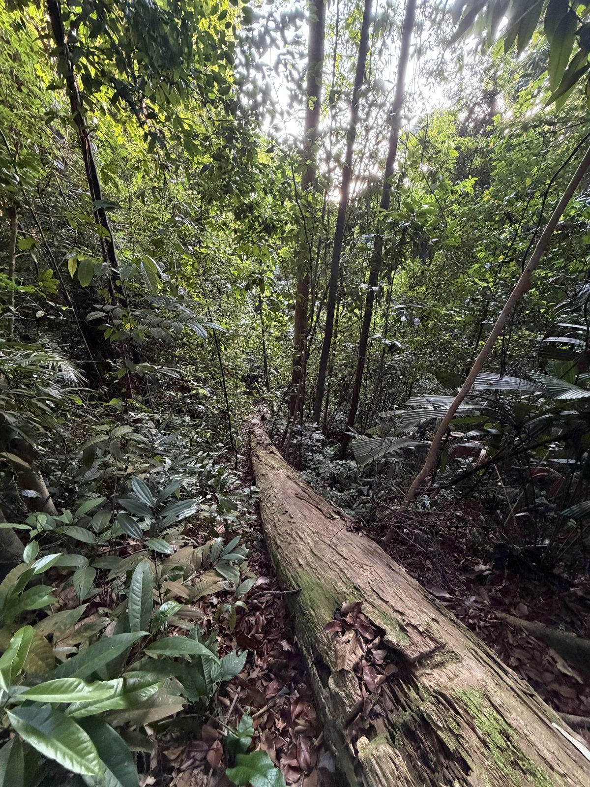
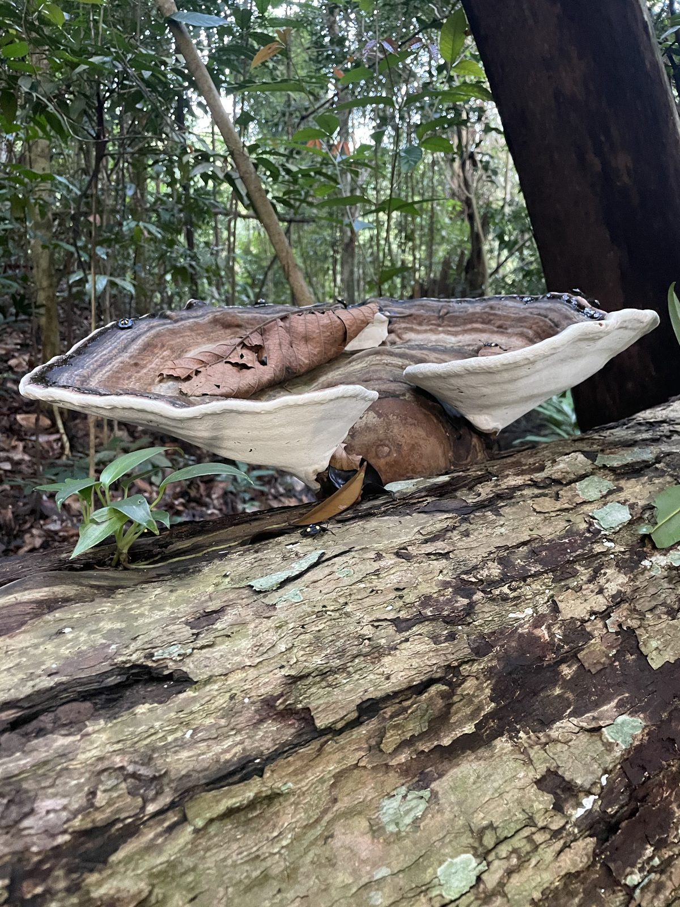
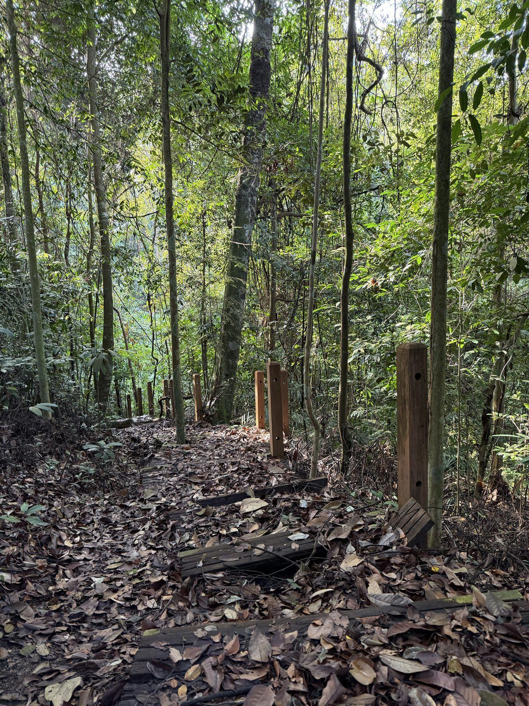

Dairy Farm Summit — 3,000 Steps Before Breakfast乳农园山顶——早餐前爬3000级台阶
This is not just a one-off adventure. I hike up to Dairy Farm Summit near my house every morning, and it is one of the best decisions I have made in retirement. The trail is 3,000 steps — not a stroll, not a warm-up. By the time I reach the top, I am properly sweating, my heart is going, and my legs have been given a real workout. That is the whole point. At seventy, you do not stay strong by accident. You train.
But the 3,000 steps are only part of it. What keeps me coming back, morning after morning, is everything else along the route. I pass beneath beautiful, enormous trees — old ones, deep-rooted, their canopies so high they seem to belong to a different world than the city below. I hear the birds singing from the moment I step onto the trail. Not recorded, not through earphones — real birds, close by, going about their morning as if I were just another creature passing through.

The smell of the forest is something you cannot replicate anywhere else. Damp earth, fallen leaves, living wood — the jungle breathes, and when you are standing in the middle of it in the early morning quiet, you breathe with it. It slows everything down in the best possible way.

And then there is something harder to explain, but I will try. Out here, away from the screens and the concrete and the WiFi and the traffic, I can feel a very different kind of energy. A strong magnetic field — that is the best way I can describe it. A stillness, an aliveness, a sense that the natural world is doing something that we mostly walk straight past. I do not walk past it. I stop, I breathe, I feel it. It is one of the real reasons I come.

My goal each morning is simple: hike all the way up to the summit, or — on the mornings my legs argue back — at the very least clock 10,000 steps. Some days I make the top with breath to spare. Some days I settle for the count. Either way I have moved, I have sweated, and I have been outdoors among the trees. At seventy, that is a morning well spent.

"3,000 steps. Trees that have been standing longer than I have been alive. Birds that do not know I am retired. A forest that does not care what I used to do. That is exactly what I need every morning."